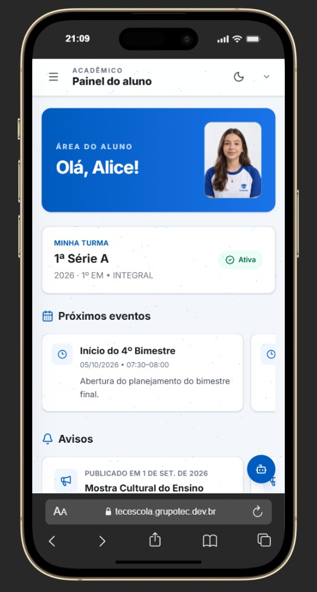

Organize o dia a dia
Grade, turmas, matrículas, frequência, notas e documentos em um só lugar.
Conhecer os perfis ↗GESTÃO ACADÊMICA INTELIGENTE
O Tec Escola aproxima gestão, alunos, famílias, professores e secretaria em uma única experiência.

NO CELULAR, DE VERDADE
O aluno consulta a grade, acompanha avisos e encontra caminhos de estudo sem perder o ritmo.
Uma plataforma para toda a comunidade escolar.
AlunosFamíliasProfessoresSecretariaDireçãoPLATAFORMA COMPLETA
Centralize a rotina acadêmica, organize a comunicação e acompanhe o desenvolvimento dos alunos com clareza. Cada perfil encontra o que precisa, no momento certo.
Grade, turmas, matrículas, frequência, notas e documentos em um só lugar.
Conhecer os perfis ↗Avisos, materiais e informações importantes chegam a quem precisa acompanhar.
Ver diferenciais ↗Atividades, Central de Estudos e recomendações ajudam a transformar dados em ação.
Ver a experiência ↗UMA EXPERIÊNCIA VIVA
Conforme você avança, veja como diferentes pessoas usam a plataforma para tomar decisões, estudar e manter a rotina em movimento.
O dashboard reúne os próximos passos e os sinais importantes do dia.
Grade de horários e compromissos ficam acessíveis para cada perfil.
Atividades, materiais e progresso conectam a sala de aula ao estudo.
PARA CADA PESSOA, UMA EXPERIÊNCIA
Notas, frequência, grade, atividades e Central de Estudos em uma rotina simples.
Mais proximidade para acompanhar informações importantes da vida escolar.
Diário de classe, chamadas, avaliações, materiais e acompanhamento das turmas.
Cadastros, matrículas e documentos com menos etapas manuais no atendimento.
Uma visão organizada da instituição para decidir com mais segurança.
ALÉM DA GESTÃO
O Tec Escola foi pensado para que a tecnologia reduza a distância entre informação, decisão e aprendizagem.
FEITO PARA CRESCER COM A INSTITUIÇÃO
Uma base acadêmica organizada para a rotina escolar.
Experiências próprias para cada perfil de acesso.
Integrações possíveis conforme o ambiente da instituição.
TEC ESCOLA
Converse com a gente e veja como a plataforma pode fazer sentido para a sua rotina.
PERGUNTAS FREQUENTES
A plataforma foi pensada para instituições de ensino que querem centralizar a gestão acadêmica e aproximar sua comunidade escolar.
Sim. Alunos, responsáveis, professores, secretaria e direção acessam experiências e informações adequadas às suas permissões.
O projeto contempla personalização de marca e experiência de acesso conforme a configuração da instituição.